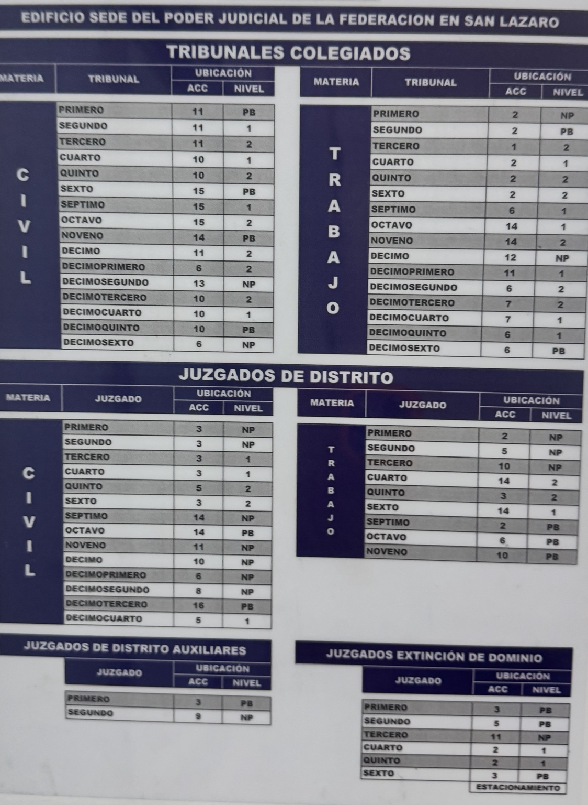
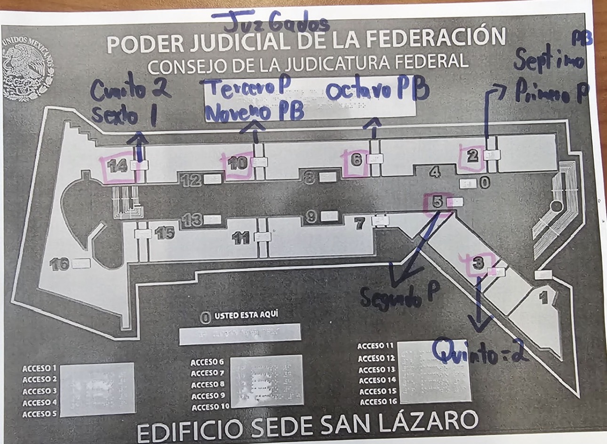
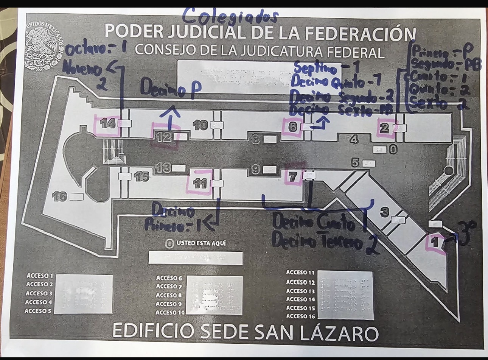
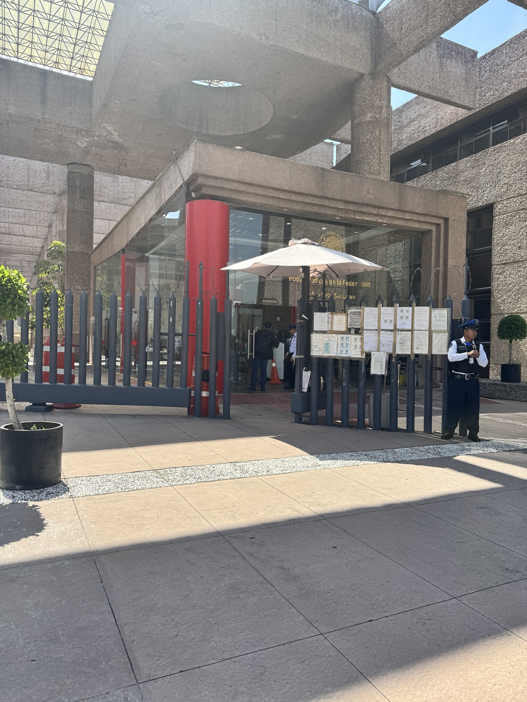
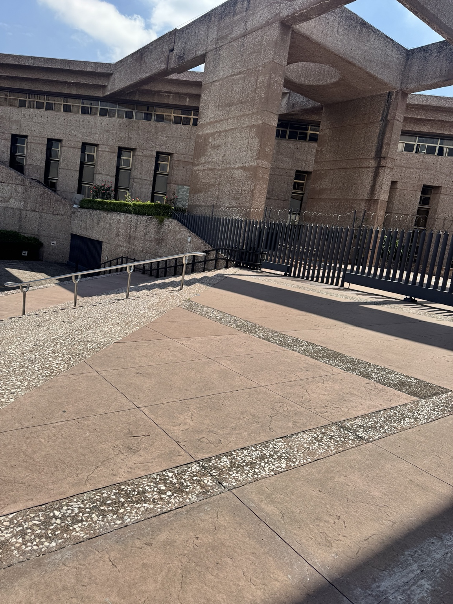

—
0
63
Ubicaciones tomadas del directorio fotografiado. El trazo de rutas es esquemático.
Resultados
Directorio completo
Mi recorrido
Favoritos
Fuente y croquis
Directorio

Croquis juzgados

Croquis colegiados

Infraestructura confirmada
📍 Entrada peatonal principal
🛗 Elevadores
🪜 Escaleras y módulos
🔗 Conexiones en Planta Baja
🚻 Sanitarios
☕ Cafetería
Fotografías de referencia

